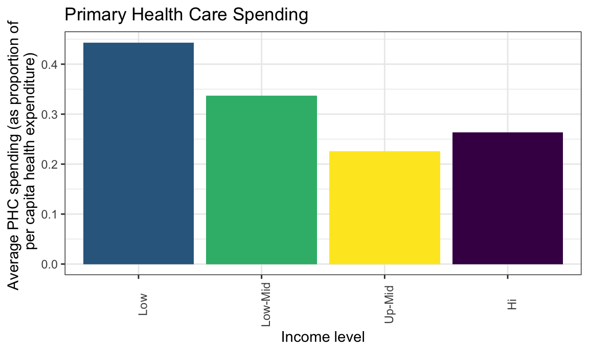
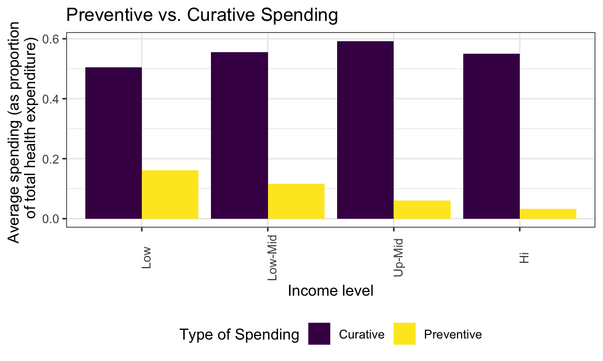
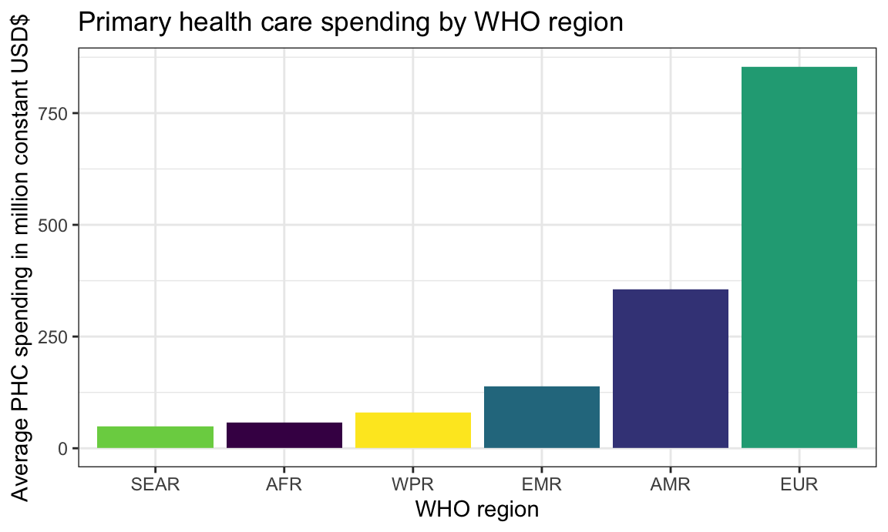
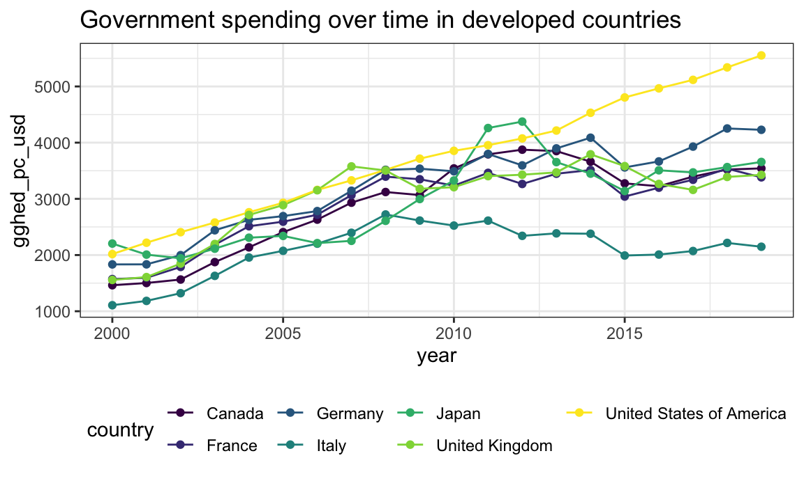
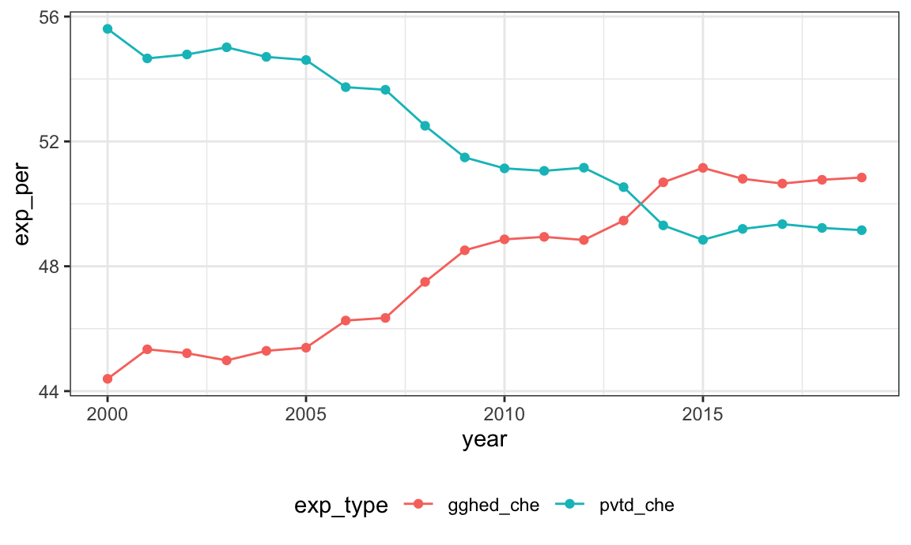

P8105 Final Project
Data Import
ghed_df <-
read_excel("data/GHED_data.XLSX")Safiya’s section
Indicators Primary health care - phc_usd_pc
Infectious disease - dis1_usd2019
Noncommunicable disease - dis4_usd2019
Preventive care - hc6_usd2019
Curative care - hc1_usd2019
GDP - gdp_pc_usd
CHE - che_pc_usd
Primary Health Care Spending
Primary health care spending by income level (USD per capita)
PHC_df <-
ghed_df %>%
janitor::clean_names() %>%
filter(year == 2019) %>%
drop_na(phc_usd_pc) %>%
group_by(income_group) %>%
summarize(
n_countries = n(),
avg_phc = mean(phc_usd_pc))
PHC_df %>%
ggplot(aes(x = fct_relevel(as.factor(income_group), c("Low", "Low-Mid", "Up-Mid", "Hi")), y = avg_phc, fill = income_group)) +
geom_col() +
labs(
title = "Primary Health Care Spending",
x = "Income level",
y = "Average PHC spending (per capita USD)"
) +
theme(axis.text.x = element_text(angle = 90)) +
theme(legend.position = "none")
Primary health care spending by income level (as as proportion of per capita GDP)
PHC_df <-
ghed_df %>%
janitor::clean_names() %>%
filter(year == 2019) %>%
drop_na(phc_usd_pc, gdp_pc_usd) %>%
group_by(income_group) %>%
summarize(
n_countries = n(),
avg_phc = mean(phc_usd_pc / gdp_pc_usd))
PHC_df %>%
ggplot(aes(x = fct_relevel(as.factor(income_group), c("Low", "Low-Mid", "Up-Mid", "Hi")), y = avg_phc, fill = income_group)) +
geom_col() +
labs(
title = "Primary Health Care Spending",
x = "Income level",
y = "Average PHC spending (as proportion of \n per capita GDP)"
) +
theme(axis.text.x = element_text(angle = 90)) +
theme(legend.position = "none")Primary health care spending by income level (as a proportion of per capita health expenditure)
PHC_df <-
ghed_df %>%
janitor::clean_names() %>%
filter(year == 2019) %>%
drop_na(phc_usd_pc, gdp_pc_usd) %>%
group_by(income_group) %>%
summarize(
n_countries = n(),
avg_phc = mean(phc_usd_pc / che_pc_usd))
PHC_df %>%
ggplot(aes(x = fct_relevel(as.factor(income_group), c("Low", "Low-Mid", "Up-Mid", "Hi")), y = avg_phc, fill = income_group)) +
geom_col() +
labs(
title = "Primary Health Care Spending",
x = "Income level",
y = "Average PHC spending (as proportion of \n per capita health expenditure)"
) +
theme(axis.text.x = element_text(angle = 90)) +
theme(legend.position = "none")
Preventive vs. Curative Spending
Primary health care spending by income level (USD per capita)
prev_df <-
ghed_df %>%
janitor::clean_names() %>%
filter(year == 2019) %>%
drop_na(hc6_usd) %>%
group_by(income_group) %>%
summarize(
n_countries = n(),
`Preventive` = mean(hc6_usd2019))
cur_df <-
ghed_df %>%
janitor::clean_names() %>%
filter(year == 2019) %>%
drop_na(hc1_usd) %>%
group_by(income_group) %>%
summarize(
n_countries = n(),
`Curative` = mean(hc1_usd2019))
prev_cur_df <-
left_join(prev_df, cur_df) %>%
pivot_longer(
`Preventive`:`Curative`,
names_to = "Type of Spending",
values_to = "avg_spend"
)## Joining, by = c("income_group", "n_countries")prev_cur_df %>%
ggplot(aes(x = fct_relevel(as.factor(income_group), c("Low", "Low-Mid", "Up-Mid", "Hi")), y = avg_spend, fill = `Type of Spending`)) +
geom_bar(stat = "identity", position = "dodge") +
labs(
title = "Preventive vs. Curative Spending",
x = "Income level",
y = "Average spending \n (million USD)"
) +
theme(axis.text.x = element_text(angle = 90))
Primary health care spending by income level (as as proportion of GDP)
prev_df <-
ghed_df %>%
janitor::clean_names() %>%
filter(year == 2019) %>%
drop_na(hc6_usd, gdp_pc_usd) %>%
group_by(income_group) %>%
summarize(
n_countries = n(),
`Preventive` = mean(hc6_usd2019 / gdp_usd2019))
cur_df <-
ghed_df %>%
janitor::clean_names() %>%
filter(year == 2019) %>%
drop_na(hc1_usd, gdp_pc_usd) %>%
group_by(income_group) %>%
summarize(
n_countries = n(),
`Curative` = mean(hc1_usd2019 / gdp_usd2019))
prev_cur_df <-
left_join(prev_df, cur_df) %>%
pivot_longer(
`Preventive`:`Curative`,
names_to = "Type of Spending",
values_to = "avg_spend"
)## Joining, by = c("income_group", "n_countries")prev_cur_df %>%
ggplot(aes(x = fct_relevel(as.factor(income_group), c("Low", "Low-Mid", "Up-Mid", "Hi")), y = avg_spend, fill = `Type of Spending`)) +
geom_bar(stat = "identity", position = "dodge") +
labs(
title = "Preventive vs. Curative Spending",
x = "Income level",
y = "Average spending (as proportion \n of GDP)"
) +
theme(axis.text.x = element_text(angle = 90))Primary health care spending by income level (as proportion of health expenditure)
prev_df <-
ghed_df %>%
janitor::clean_names() %>%
filter(year == 2019) %>%
drop_na(hc6_usd, gdp_pc_usd) %>%
group_by(income_group) %>%
summarize(
n_countries = n(),
`Preventive` = mean(hc6_usd2019 / che_usd2019))
cur_df <-
ghed_df %>%
janitor::clean_names() %>%
filter(year == 2019) %>%
drop_na(hc1_usd, gdp_pc_usd) %>%
group_by(income_group) %>%
summarize(
n_countries = n(),
`Curative` = mean(hc1_usd2019 / che_usd2019))
prev_cur_df <-
left_join(prev_df, cur_df) %>%
pivot_longer(
`Preventive`:`Curative`,
names_to = "Type of Spending",
values_to = "avg_spend"
)## Joining, by = c("income_group", "n_countries")prev_cur_df %>%
ggplot(aes(x = fct_relevel(as.factor(income_group), c("Low", "Low-Mid", "Up-Mid", "Hi")), y = avg_spend, fill = `Type of Spending`)) +
geom_bar(stat = "identity", position = "dodge") +
labs(
title = "Preventive vs. Curative Spending",
x = "Income level",
y = "Average spending (as proportion \n of total health expenditure)"
) +
theme(axis.text.x = element_text(angle = 90))
Infectious vs. Non-communicable Diseases
Ragyie’s section
Indicators for analysis
- Curative care, in million constant (2019) US$ —> hc1_usd2019
- Preventive care, in million constant (2019) US$ —> hc6_usd2019
- Infectious and Parasitic Diseases, in million constant (2019) US$ —> dis1_usd2019
- Noncommunicable Diseases (NCDs), in million constant (2019) US$ —> dis4_usd2019
- Primary Health Care (PHC) Expenditure per Capita in US$ —> phc_usd_pc
- GDP - gdp_pc_usd
- CHE - che_pc_usd
- che_usd2019
- gdp_usd2019
Expenditure category analysis: WHO regions
Will compare and plot the average in 2019 of spending in categories of interest for each WHO region
Primary health care:
Average primary health care expenditure for each WHO region in million constant USD$
phc_ghed =
ghed_df %>%
janitor::clean_names() %>%
filter(year == 2019) %>%
drop_na(phc_usd_pc) %>%
group_by(region_who) %>%
summarize(
n_countries = n(),
avg_primary = mean(phc_usd_pc)
)Barplot: Primary health care expenditure in million constant USD$
phc_ghed %>%
ggplot(aes(x = reorder(region_who, avg_primary), y = avg_primary, fill = region_who)) +
geom_bar(stat = "Identity") +
labs(
title = "Primary health care spending by WHO region",
x = "WHO region",
y = "Average PHC spending in million constant USD$"
) +
theme(legend.position = "none")
Average primary health care expenditure for each WHO region with spending as a percent of GDP
To see how much different WHO regions are spending with regards to what resources they actually have
phc_gdp_ghed =
ghed_df %>%
janitor::clean_names() %>%
filter(year == 2019) %>%
drop_na(phc_usd_pc, gdp_pc_usd) %>%
group_by(region_who) %>%
summarize(
n_countries = n(),
avg_primary_gdp = mean(phc_usd_pc / gdp_pc_usd)
)Barplot: Primary health care expenditure with spending as a percent of GDP
phc_gdp_ghed %>%
ggplot(aes(x = reorder(region_who, avg_primary_gdp), y = avg_primary_gdp, fill = region_who)) +
geom_bar(stat = "Identity") +
labs(
title = "Primary health care spending by WHO region",
x = "WHO region",
y = "Average PHC spending per capita GDP"
) +
theme(legend.position = "none")
Average primary health care expenditure for each WHO region with spending as a percentage of current health expenditure
To investigate how much of health spending goes toward each category for each WHO region
phc_che_ghed =
ghed_df %>%
janitor::clean_names() %>%
filter(year == 2019) %>%
drop_na(phc_usd_pc, che_pc_usd) %>%
group_by(region_who) %>%
summarize(
n_countries = n(),
avg_primary_che = mean(phc_usd_pc / che_pc_usd)
)Barplot: Primary health care expenditure with spending as a percent of current health expenditure
phc_che_ghed %>%
ggplot(aes(x = reorder(region_who, avg_primary_che), y = avg_primary_che, fill = region_who)) +
geom_bar(stat = "Identity") +
labs(
title = "Primary health care spending by WHO region",
x = "WHO region",
y = "Average PHC spending per capita health expenditure"
) +
theme(legend.position = "none")Curative care vs. preventative care
Comparing average curative expenditure and average preventative expenditure for each WHO region
Average curative and preventative health care expenditure for each WHO region in million constant USD$
cp_df =
ghed_df %>%
janitor::clean_names() %>%
filter(year == 2019) %>%
drop_na(hc1_usd2019, hc6_usd2019) %>%
group_by(region_who) %>%
summarize(
n_countries = n(),
`Curative` = mean(hc1_usd2019),
`Preventative` = mean(hc6_usd2019)
) %>%
pivot_longer(
`Curative`:`Preventative`,
names_to = "spending_type",
values_to = "average_spending"
)Barplot: Average curative vs. preventative health care expenditure for each WHO region in million constant USD$
cp_df %>%
ggplot(aes(x = reorder(region_who, average_spending), y = average_spending, fill = spending_type)) +
geom_bar(stat = "Identity", position = "Dodge") +
labs(
title = "Average curative vs. preventative spending by WHO region",
x = "WHO region",
y = "Average spending in million constant USD$"
) 
Average curative vs. preventative expenditure for each WHO region with spending as a percent of GDP
cp_gdp_df =
ghed_df %>%
janitor::clean_names() %>%
filter(year == 2019) %>%
drop_na(hc1_usd2019, hc6_usd2019, gdp_usd2019) %>%
group_by(region_who) %>%
summarize(
n_countries = n(),
`Curative` = mean(hc1_usd2019 / gdp_usd2019),
`Preventative` = mean(hc6_usd2019 / gdp_usd2019)
) %>%
pivot_longer(
`Curative`:`Preventative`,
names_to = "spending_type",
values_to = "average_spending"
)Barplot: Curative vs. preventative expenditure with spending as a percent of GDP
cp_gdp_df %>%
ggplot(aes(x = reorder(region_who, average_spending), y = average_spending, fill = spending_type)) +
geom_bar(stat = "Identity", position = "Dodge") +
labs(
title = "Average curative vs. preventative spending by WHO region",
x = "WHO region",
y = "Average spending per capita GDP"
) 
Average curative vs. preventative expenditure for each WHO region with spending as a percentage of current health expenditure
cp_che_df =
ghed_df %>%
janitor::clean_names() %>%
filter(year == 2019) %>%
drop_na(hc1_usd2019, hc6_usd2019, che_usd2019) %>%
group_by(region_who) %>%
summarize(
n_countries = n(),
`Curative` = mean(hc1_usd2019 / che_usd2019),
`Preventative` = mean(hc6_usd2019 / che_usd2019)
) %>%
pivot_longer(
`Curative`:`Preventative`,
names_to = "spending_type",
values_to = "average_spending"
)Barplot: Curative vs. preventative expenditure with spending as a percent of current health expenditure
cp_che_df %>%
ggplot(aes(x = reorder(region_who, average_spending), y = average_spending, fill = spending_type)) +
geom_bar(stat = "Identity", position = "Dodge") +
labs(
title = "Average curative vs. preventative spending by WHO region",
x = "WHO region",
y = "Average spending per capita health expenditure"
) ======= ### Trisha’s section
ghed_df =
ghed_df %>%
janitor::clean_names()Distribution of income levels of countries in each WHO region
ghed_df %>%
select(country, country_code, region_who, income_group) %>%
distinct() %>%
mutate(
income_group = as.factor(income_group),
income_group = factor(income_group, levels = c("Low","Low-Mid","Up-Mid","Hi"))
) %>%
group_by(region_who) %>%
mutate(
num_countries = n()
) %>%
group_by(region_who, income_group, num_countries) %>%
summarize(n = n()) %>%
mutate(
perc_income_group = 100*(n/num_countries)
) %>%
ggplot(aes(x=income_group,y=perc_income_group)) +
geom_bar(aes(fill=income_group),stat="identity") +
facet_grid(~region_who) +
theme(axis.text.x = element_text(angle = 80, hjust = 1)) +
ggtitle("Distribution of income levels of countries in each WHO region") +
ylab("% of countries in region") +
xlab("country income group (2019)")## `summarise()` has grouped output by 'region_who', 'income_group'. You can override using the `.groups` argument.The figure above shows the distribution of income levels of countries (categorized in 2019) in each WHO region: AFR (African Region), AMR (Region of the Americas), EMR (Eastern Mediterranean Region), EUR (European Region), SEAR (South-East Asian Region), and WPR (Western Pacific Region).
Highest proportion of income group type by region:
Low income: AFR
Low-Mid income: SEAR
Up-Mid income: AMR
Hi income: EUR
Income group and total healthcare expenditure
ghed_df %>%
select(country, country_code, region_who, income_group, year, che_gdp, che_pc_usd) %>%
filter(year == 2019) %>%
mutate(
income_group= as.factor(income_group),
income_group = factor(income_group, levels = c("Low","Low-Mid","Up-Mid","Hi"))
) %>%
group_by(income_group) %>%
summarise(mean_che_gdp = mean(che_gdp,na.rm=TRUE), mean_che_pc_usd = mean(che_pc_usd,na.rm=TRUE)) %>%
knitr::kable(digits = 2)| income_group | mean_che_gdp | mean_che_pc_usd |
|---|---|---|
| Low | 6.01 | 39.25 |
| Low-Mid | 5.08 | 126.69 |
| Up-Mid | 6.90 | 482.74 |
| Hi | 7.69 | 2937.29 |
The above table describes the following variables for all income groups:
che_gdp: Current Health Expenditure (CHE) as % Gross Domestic Product (GDP) [Percentage]
che_pc_usd: Current Health Expenditure (CHE) per Capita in US$ [Ones]
As we can see, the mean CHE per capita in US$ increases as we go from low income groups to high income groups. The highest CHE as % of GDP belongs to countries in the highest income group at 7.67%; however, we see that this percentage for all income groups ranges from roughly 5-8%, so the amount per capita a country is able to dedicate for health expenditure depends and varies based on country GDP and income level.
WHO region and total healthcare expenditure
ghed_df %>%
select(country, country_code, region_who, income_group, year, che_gdp, che_pc_usd) %>%
filter(year == 2019) %>%
group_by(region_who) %>%
summarise(mean_che_gdp = mean(che_gdp,na.rm=TRUE), mean_che_pc_usd = mean(che_pc_usd,na.rm=TRUE)) %>%
arrange(mean_che_pc_usd) %>%
knitr::kable(digits = 2)| region_who | mean_che_gdp | mean_che_pc_usd |
|---|---|---|
| AFR | 5.33 | 128.38 |
| SEAR | 4.42 | 186.29 |
| EMR | 5.52 | 634.23 |
| AMR | 7.20 | 1081.32 |
| WPR | 7.32 | 1107.48 |
| EUR | 7.63 | 2461.09 |
The above table describes the following variables for all WHO regions:
che_gdp: Current Health Expenditure (CHE) as % Gross Domestic Product (GDP) [Percentage]
che_pc_usd: Current Health Expenditure (CHE) per Capita in US$ [Ones]
Developed countries - total spending over time
major developed economies (UN): Canada, Japan, France, Germany, Italy, UK, US
ghed_df %>%
select(country, country_code, region_who, income_group, year, che_gdp, che_pc_usd) %>%
filter(country == "United States of America" |
country == "United Kingdom" |
country == "Italy" |
country == "Germany" |
country == "France" |
country == "Japan" |
country == "Canada") %>%
mutate(
year = as.numeric(year)
) %>%
group_by(country) %>%
ggplot(aes(x=year,y=che_pc_usd, color=country)) +
geom_line() +
geom_point() +
ggtitle("Total spending over time in developed countries") +
scale_colour_viridis_d()Developed countries - government spending over time
gghed_pc_usd Domestic General Government Health Expenditure (GGHE-D) per Capita in US$
ghed_df %>%
select(country, country_code, region_who, income_group, year, gghed_pc_usd) %>%
filter(country == "United States of America" |
country == "United Kingdom" |
country == "Italy" |
country == "Germany" |
country == "France" |
country == "Japan" |
country == "Canada") %>%
mutate(
year = as.numeric(year)
) %>%
group_by(country) %>%
ggplot(aes(x=year,y=gghed_pc_usd, color=country)) +
geom_line() +
geom_point() +
ggtitle("Government spending over time in developed countries") +
scale_colour_viridis_d()
Developing countries - total spending over time
developing economies: Morocco, Uganda, South Africa, Senegal Nepal, Iraq, Haiti, Mexico, Argentina
ghed_df %>%
select(country, country_code, region_who, income_group, year, che_gdp, che_pc_usd) %>%
filter(country == "Morocco" |
country == "Uganda" |
country == "South Africa" |
country == "Senegal" |
country == "Nepal" |
country == "Iraq" |
country == "Haiti" |
country == "Mexico" |
country == "Argentina") %>%
mutate(
year = as.numeric(year)
) %>%
group_by(country) %>%
ggplot(aes(x=year,y=che_pc_usd, color=country)) +
geom_line() +
geom_point() +
ggtitle("Total spending over time in developing countries") +
scale_colour_viridis_d()## Warning: Removed 3 row(s) containing missing values (geom_path).## Warning: Removed 3 rows containing missing values (geom_point).Developing countries - government spending over time
ghed_df %>%
select(country, country_code, region_who, income_group, year, gghed_pc_usd) %>%
filter(country == "Morocco" |
country == "Uganda" |
country == "South Africa" |
country == "Senegal" |
country == "Nepal" |
country == "Iraq" |
country == "Haiti" |
country == "Mexico" |
country == "Argentina") %>%
mutate(
year = as.numeric(year)
) %>%
group_by(country) %>%
ggplot(aes(x=year,y=gghed_pc_usd, color=country)) +
geom_line() +
geom_point() +
ggtitle("Government spending over time in developing countries") +
scale_colour_viridis_d()## Warning: Removed 3 row(s) containing missing values (geom_path).## Warning: Removed 3 rows containing missing values (geom_point).
LM - correlation between WHO region, external funding, private spending, and government expenditure and income group
ghed_lm_df =
ghed_df %>%
select(country, country_code, region_who, income_group, ext_pc_usd, pvtd_pc_usd, gghed_pc_usd) %>%
drop_na() %>%
mutate(
income_group = as.factor(income_group),
income_group = factor(income_group, levels = c("Low","Low-Mid","Up-Mid","Hi")),
income_group = fct_recode(income_group, '1'="Low",'2'="Low-Mid", '3'="Up-Mid", '4'="Hi")
)ghed_lm_df_shuffled = ghed_lm_df[sample(nrow(ghed_lm_df)),]
ghed_lm_df_shuffled =
ghed_lm_df_shuffled %>%
mutate(
sum_pc = ext_pc_usd + pvtd_pc_usd + gghed_pc_usd,
ext_pc_usd = ext_pc_usd/sum_pc,
pvtd_pc_usd = pvtd_pc_usd/sum_pc,
gghed_pc_usd = gghed_pc_usd/sum_pc
)fit_exp_dstbn = lm(as.numeric(income_group) ~ ext_pc_usd + pvtd_pc_usd + gghed_pc_usd, ghed_lm_df_shuffled)
fit_region_exp = lm(as.numeric(income_group) ~ ext_pc_usd + pvtd_pc_usd + gghed_pc_usd + region_who, ghed_lm_df_shuffled)
summary(fit_exp_dstbn)##
## Call:
## lm(formula = as.numeric(income_group) ~ ext_pc_usd + pvtd_pc_usd +
## gghed_pc_usd, data = ghed_lm_df_shuffled)
##
## Residuals:
## Min 1Q Median 3Q Max
## -2.06118 -0.48440 0.04227 0.47417 2.31487
##
## Coefficients: (1 not defined because of singularities)
## Estimate Std. Error t value Pr(>|t|)
## (Intercept) 4.14131 0.03250 127.44 <2e-16 ***
## ext_pc_usd -4.59240 0.08648 -53.10 <2e-16 ***
## pvtd_pc_usd -2.41383 0.06394 -37.75 <2e-16 ***
## gghed_pc_usd NA NA NA NA
## ---
## Signif. codes: 0 '***' 0.001 '**' 0.01 '*' 0.05 '.' 0.1 ' ' 1
##
## Residual standard error: 0.7228 on 3337 degrees of freedom
## Multiple R-squared: 0.5112, Adjusted R-squared: 0.5109
## F-statistic: 1745 on 2 and 3337 DF, p-value: < 2.2e-16fit_region_exp %>%
broom::glance()## # A tibble: 1 × 12
## r.squared adj.r.squared sigma statistic p.value df logLik AIC BIC
## <dbl> <dbl> <dbl> <dbl> <dbl> <dbl> <dbl> <dbl> <dbl>
## 1 0.585 0.585 0.666 672. 0 7 -3378. 6775. 6830.
## # … with 3 more variables: deviance <dbl>, df.residual <int>, nobs <int>Pooja’s Part
#Developed - Canada, Japan, France, Germany, Italy, UK, US
ghed_df%>%
filter(country=="Canada"| country=="Japan"| country=="France"| country=="Germany"| country=="Italy"| country=="United Kingdom
"| country=="United States of America")%>%
filter(year == 2019)%>%
select(country, year, gghed_che, pvtd_che)%>%
mutate(sum_per = gghed_che + pvtd_che)%>%
pivot_longer(cols = contains("che"),
names_to = "exp_type",
values_to = "exp_per")%>%
ggplot(aes(fill = exp_type, y = exp_per, x = country))+
geom_bar(position="stack", stat="identity")
ghed_df%>%
filter(year == 2019)%>%
select(region_who, income_group, year, gghed_che, pvtd_che)%>%
group_by(region_who, income_group)%>%
mutate(sum_gghed = sum(gghed_che),
sum_pvtd = sum(pvtd_che),
sum_che = sum_gghed + sum_pvtd,
income_group = factor(income_group, levels = c("Low", "Low-Mid", "Up-Mid", "Hi")))%>%
select(region_who, income_group, year, sum_gghed, sum_pvtd, sum_che)%>%
distinct()%>%
mutate(gghed_per = sum_gghed/sum_che,
pvtd_per = sum_pvtd/sum_che)%>%
pivot_longer(cols = contains("per"),
names_to = "exp_type",
values_to = "exp_per")%>%
select(region_who, income_group, exp_type, exp_per)%>%
ggplot(aes(fill = exp_type, y = exp_per, x = income_group))+
geom_bar(stat="identity")+facet_grid(cols = vars(region_who))+theme(axis.text.x = element_text(angle = 45, vjust = 0.5, hjust=1))+
scale_fill_discrete(name="Expenditure Type",
breaks=c("gghed_per", "pvtd_per"),
labels=c("Government", "Private"))## Warning: Removed 6 rows containing missing values (position_stack).Government vs. Private expenditure over time in the US
ghed_df%>%
filter(country == "United States of America")%>%
select(country, year, gghed_pc_usd, pvtd_pc_usd)%>%
pivot_longer(cols = contains("pc_usd"),
names_to = "exp_type",
values_to = "exp_per_cap")%>%
ggplot() + geom_point(aes(x = year, y = exp_per_cap, col = exp_type))+geom_line(aes(x = year, y = exp_per_cap, group = exp_type, colour = exp_type))ghed_df%>%
filter(country=="United States of America")%>%
select(country, year, gghed_che, pvtd_che)%>%
mutate(sum_per = gghed_che + pvtd_che)%>%
pivot_longer(cols = contains("che"),
names_to = "exp_type",
values_to = "exp_per")%>%
ggplot() + geom_point(aes(x = year, y = exp_per, col = exp_type))+geom_line(aes(x = year, y = exp_per, group = exp_type, colour = exp_type))ghed_df%>%
filter(year ==2019)%>%
select(country,region_who, year,income_group, gghed_pc_usd, pvtd_pc_usd, ext_pc_usd)%>%
group_by(region_who, income_group)%>%
mutate(avg_ext_exp = mean(ext_pc_usd))%>%
select(region_who, income_group, avg_ext_exp)%>%
distinct()%>%
ggplot(aes(y = avg_ext_exp, x = income_group))+
geom_bar(stat="identity")+facet_grid(cols = vars(region_who))+theme(axis.text.x = element_text(angle = 45, vjust = 0.5, hjust=1))## Warning: Removed 6 rows containing missing values (position_stack).ghed_df%>%
filter(year ==2019)%>%
select(country,region_who, year,income_group, gghed_pc_usd, pvtd_pc_usd, ext_che)%>%
group_by(region_who, income_group)%>%
mutate(avg_ext_exp = mean(ext_che),
income_group = factor(income_group, levels = c("Low", "Low-Mid", "Up-Mid", "Hi")))%>%
select(region_who, income_group, avg_ext_exp)%>%
distinct()%>%
ggplot(aes(y = avg_ext_exp, x = income_group))+
geom_bar(stat="identity")+facet_grid(cols = vars(region_who))+theme(axis.text.x = element_text(angle = 45, vjust = 0.5, hjust=1))## Warning: Removed 6 rows containing missing values (position_stack).
un_country_class<- read_csv("data/un_country_classification.csv")## Rows: 249 Columns: 16## ── Column specification ────────────────────────────────────────────────────────
## Delimiter: ","
## chr (16): Global Code, Global Name, Region Code, Region Name, Sub-region Cod...##
## ℹ Use `spec()` to retrieve the full column specification for this data.
## ℹ Specify the column types or set `show_col_types = FALSE` to quiet this message.head(un_country_class)## Warning: One or more parsing issues, see `problems()` for details## # A tibble: 6 × 16
## `Global Code` `Global Name` `Region Code` `Region Name` `Sub-region Code`
## <chr> <chr> <chr> <chr> <chr>
## 1 001 World 002 Africa 015
## 2 001 World 002 Africa 015
## 3 001 World 002 Africa 015
## 4 001 World 002 Africa 015
## 5 001 World 002 Africa 015
## 6 001 World 002 Africa 015
## # … with 11 more variables: Sub-region Name <chr>,
## # Intermediate Region Code <chr>, Intermediate Region Name <chr>,
## # Country or Area <chr>, M49 Code <chr>, ISO-alpha2 Code <chr>,
## # ISO-alpha3 Code <chr>, Least Developed Countries (LDC) <chr>,
## # Land Locked Developing Countries (LLDC) <chr>,
## # Small Island Developing States (SIDS) <chr>,
## # Developed / Developing Countries <chr>un_country_class<- un_country_class%>%
janitor::clean_names()%>%
select(country_or_area, developed_developing_countries)%>%
mutate(developed = str_replace(developed_developing_countries, ".*Developing.*", "Developing"))%>%
select(country_or_area, developed)
ghed_df<- left_join(ghed_df, un_country_class, by = c("country" = "country_or_area")) ghed_df%>%
select(country,region_who, year,developed, gghed_pc_usd, pvtd_pc_usd, ext_che)%>%
group_by(region_who, developed)%>%
mutate(avg_ext_exp = mean(ext_che,na.rm=TRUE),
developed = factor(developed, levels = c(NA, "Developing", "Developed")))%>%
select(region_who, developed, avg_ext_exp)%>%
distinct()%>%
ggplot(aes(y = avg_ext_exp, x = developed, colours=region_who))+
geom_bar(stat="identity", aes(fill = region_who))+facet_grid(cols = vars(region_who))+theme(axis.text.x = element_text(angle = 45, vjust = 0.5, hjust=1))+scale_fill_viridis_d()